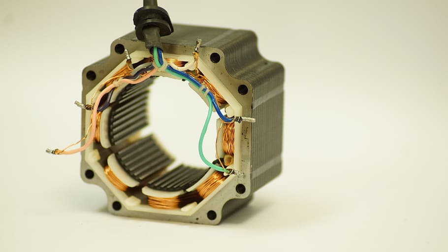

Stepper Motor is a brushless electromechanical device which converts the train of electric pulses applied at their excitation windings into precisely defined step-by-step mechanical shaft rotation. The shaft of the motor rotates through a fixed angle for each discrete pulse. This rotation can be linear or angular.It gets one step movement for a single pulse input.When a train of pulses is applied, it gets turned through a certain angle. The angle through which the stepper motor shaft turns for each pulse is referred as the step angle, which is generally expressed in degrees.The number of input pulses given to the motor decides the step angle and hence the position of motor shaft is controlled by controlling the number of pulses. This unique feature makes the stepper motor to be well suitable for open-loop control system wherein the precise position of the shaft is maintained with exact number of pulses without using a feedback sensor.If the step angle is smaller, the greater will be the number of steps per revolutions and higher will be the accuracy of the position obtained. The step angles can be as large as 90 degrees and as small as 0.72 degrees, however, the commonly used step angles are 1.8 degrees, 2.5 degrees, 7.5 degrees and 15 degrees.
The direction of the shaft rotation depends on the sequence of pulses applied to the stator. The speed of the shaft or the average motor speed is directly proportional to the frequency (the rate of input pulses) of input pulses being applied at excitation windings. Therefore, if the frequency is low, the stepper motor rotates in steps and for high frequency, it continuously rotates like a DC motor due to inertia.Like all electric motors, it has stator and rotor. The rotor is the movable part which has no windings, brushes and a commutator. Usually the rotors are either variable reluctance or permanent magnet kind. The stator is often constructed with multipole and multiphase windings, usually of three or four phase windings wound for a required number of poles decided by desired angular displacement per input pulse.Unlike other motors it operates on a programmed discrete control pulses that are applied to the stator windings via an electronic drive. The rotation occurs due to the magnetic interaction between poles of sequentially energized stator winding and poles of the rotor.
There are three basic categories of stepper motors, namely